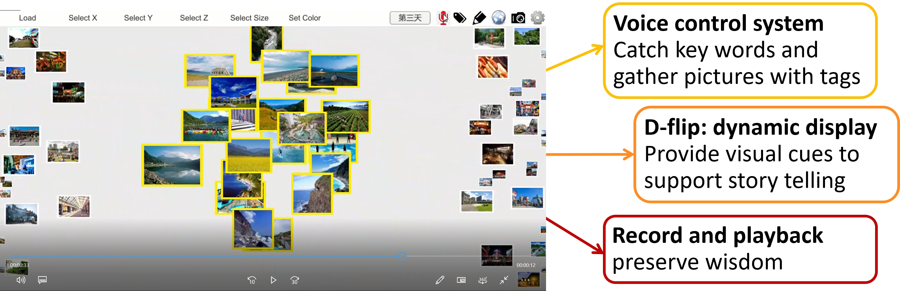

U x research

i-Path : An Intelligent System for Preserving Older Adults’ Wisdom
Research Background
- Through the retrospective view on his or her life, the narrator can acquire resilience, wisdom, well-aging, and well-being (Pecorini & Duplaa, 2017 ).
- However, though the older adults are willing to share, there are often no listeners.
- Digital storytelling is good for the health (positive emotion and cognitive training) and for inter-generational interaction (attract listeners).
- Digital storytelling applies moving visual images, text, graphics, and audio components that produce a multimedia product for new or ‘remixed’ versions of stories (Hoechsmann et al, 2015).
Goal
- Develop an digital storytelling system
Methods
1. Interview with 20 older adults’
- Need customized interface
- Prefer AI as a helper for digitalizing autobiography
- Want to share and listen to stories
- Want to preserve memories mainly by photos
2. Define Users’ needs
- Attract listeners while interacting with d-flip (Vi et al, 2013)
- Help users tell their stories by using active photos
- Preserve knowledge and skills
3. Prototype

4. Usability and acceptance test
-
Participants:
- 20 younger adults
- 20 older adults
-
Measures:
- Ten Item Personality Measure (TIPI)
- Montreal Cognitive Assessment (MoCA )
- Technology Acceptance Model (TAM)
- State / Trait curiosity
- User experience questionnaires
- In depth interview

-
Pictures:
- 9*2 personal related pictures in each story
- 45 unrelated pictures in each story

Results

-
左圖為前測的科技接受度(針對一般科技產品)，右圖為後測的科技接受度(針對ipath)
-
年長者與年輕人對一般產品的接受度沒有差異
-
年長者對ipath有比較高的接受度

-
左圖為前測的好奇心特質，右圖為後測的好奇心狀態
-
年長者在特質與狀態上都主觀回報比年輕人高

-
針對ipath目的的問卷，年長者的感受比年輕人正向
-
問卷分成五個子向度: Attract listener, Assist story telling, Love and belonging needs, Self- esteem, Self-Actualization (其中Love and belonging needs, Self- esteem, Self-Actualization是用來測量智慧保留)

-
針對ipath的三大功能(動態播放、錄音、聲控)與介面設計的問卷，年長者的評價比年輕人高

-
長者的平均說故事時間比年輕人長，然而對ipath講故事的時間與對控制情境講的時間沒有顯著差異
References
- Pecorini, B. C., & Duplaa, E. (2017). Narrative Gerontology and Digital Storytelling: What Benefits for Elders. MOJ Public Health, 6(6), 00192.
- Hoechsmann M, De Waard H (2015). Define digital literacy policy and practice in the landscape of Canadian education. Media Smarts, Canada, 1-75.
- Vi, C. T., Takashima, K., Yokoyama, H., Liu, G., Itoh, Y., Subramanian, S., & Kitamura, Y. (2013). D-flip: Dynamic and flexible interactive photoshow. The International Conference on Advances in Computer Entertainment Technology, Springer, Cham.